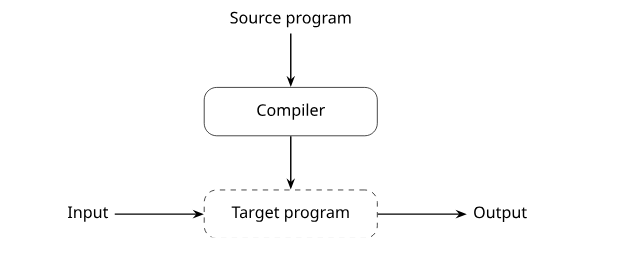
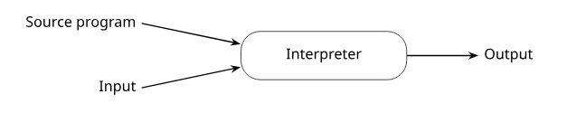
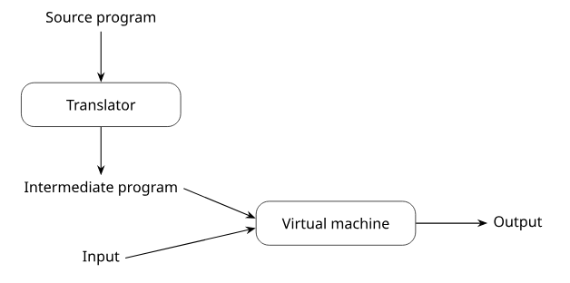
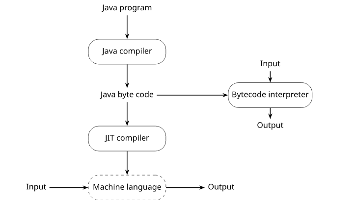
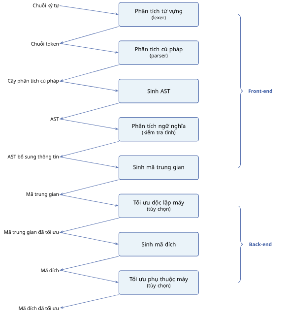
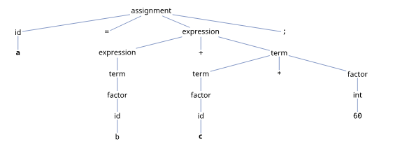
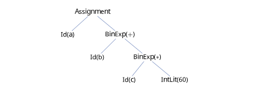

Mở đầu
Ngôn ngữ lập trình là một trong những phát minh quan trọng nhất của khoa học máy tính. Nếu phần cứng cung cấp khả năng thực hiện tính toán, thì ngôn ngữ lập trình cung cấp phương tiện để con người mô tả những tính toán đó một cách có cấu trúc, có thể đọc được, có thể kiểm tra được và cuối cùng có thể được máy tính thực thi.
Trong chương này, chúng ta tiếp cận ngôn ngữ lập trình dưới góc độ nguyên lý. Thay vì chỉ hỏi "ngôn ngữ nào dễ học hơn" hoặc "ngôn ngữ nào chạy nhanh hơn", chương này đặt ra những câu hỏi nền tảng hơn: ngôn ngữ lập trình dùng để biểu diễn điều gì, một ngôn ngữ tốt cần có những đặc trưng nào, vì sao các ngôn ngữ khác nhau lại được thiết kế theo những hướng khác nhau, chương trình được thực thi như thế nào, và một trình biên dịch xử lý chương trình nguồn qua những giai đoạn nào.
Ngôn ngữ lập trình
Ngôn ngữ lập trình như một hệ ký hiệu
Ở mức cơ bản nhất, ngôn ngữ lập trình (programming language) là một hệ thống ký hiệu dùng để mô tả các phép tính, thao tác dữ liệu và hành vi của chương trình. Một chương trình không chỉ được viết cho máy tính thực thi; nó còn được viết để con người đọc, hiểu, sửa đổi và phát triển tiếp. Một câu lệnh đơn giản như sau:
a = b + c * 60;đối với máy tính, cuối cùng sẽ phải được chuyển thành một chuỗi lệnh ở mức thấp hơn để đọc dữ liệu, thực hiện phép nhân, phép cộng và ghi kết quả vào bộ nhớ. Tuy nhiên, đối với người lập trình, câu lệnh trên biểu diễn một ý tưởng rất rõ ràng: lấy giá trị của c, nhân với 60, cộng với b, rồi gán kết quả cho a. Chính vì vậy, ngôn ngữ lập trình đóng vai trò là cầu nối giữa hai thế giới. Một mặt, nó phải đủ hình thức để máy tính có thể xử lý một cách chính xác. Mặt khác, nó phải đủ gần với tư duy của con người để người lập trình có thể diễn đạt thuật toán, cấu trúc dữ liệu và ý định thiết kế một cách rõ ràng.
Một hệ ký hiệu (notation) là cách dùng các ký hiệu, quy tắc và cấu trúc để biểu diễn một nội dung nào đó. Toán học dùng ký hiệu để biểu diễn quan hệ giữa các đại lượng. Âm nhạc dùng khuông nhạc và nốt nhạc để biểu diễn âm thanh. Ngôn ngữ lập trình dùng từ khóa, biểu thức, câu lệnh, kiểu dữ liệu và cấu trúc chương trình để biểu diễn tính toán. Ví dụ, trong toán học, ta có thể viết:
f(x) = x² + 1Trong một ngôn ngữ lập trình như Python, ý tưởng này có thể được viết thành:
def f(x):
return x * x + 1Cả hai cách viết đều biểu diễn một hàm nhận đầu vào x và trả về x² + 1. Tuy nhiên, chương trình Python còn phải tuân theo nhiều quy tắc cụ thể hơn: cách định nghĩa hàm, cách đặt tên biến, cách thụt lề, cách thực hiện phép nhân và cách trả về kết quả. Một ngôn ngữ lập trình vì thế không chỉ là tập hợp các ký hiệu rời rạc. Nó là một hệ thống gồm:
- Từ vựng (lexicon): các đơn vị nhỏ nhất như từ khóa, tên biến, toán tử, hằng số.
- Cú pháp (syntax): quy tắc kết hợp các đơn vị từ vựng thành biểu thức, câu lệnh và chương trình.
- Ngữ nghĩa (semantics): ý nghĩa của các cấu trúc trong chương trình.
- Mô hình thực thi (execution model): cách chương trình được chạy trên máy thật hoặc máy ảo.
Ví dụ, đoạn mã sau hợp lệ về mặt từ vựng vì các ký hiệu đều có thể nhận diện được:
x = y + 1;Nó cũng hợp lệ về mặt cú pháp trong C nếu nằm trong ngữ cảnh phù hợp. Nhưng nó chỉ hợp lệ về mặt ngữ nghĩa nếu x và y đã được khai báo, có kiểu phù hợp, và phép cộng y + 1 là hợp lệ.
Các miền ứng dụng của ngôn ngữ lập trình
Không có một ngôn ngữ lập trình duy nhất phù hợp nhất cho mọi bài toán. Mỗi ngôn ngữ thường được thiết kế trong một bối cảnh lịch sử, phần cứng, nhu cầu ứng dụng và phương pháp lập trình nhất định.
Trong lĩnh vực tính toán khoa học và dữ liệu (scientific and data computing), các chương trình thường xử lý số học, ma trận, mô phỏng, thống kê và trực quan hóa dữ liệu. Các ngôn ngữ cổ điển như Fortran và ALGOL 60 từng đóng vai trò rất quan trọng. Ngày nay, Python, Julia, R và MATLAB được sử dụng rộng rãi:
values = [1.2, 3.5, 4.8, 2.1]
average = sum(values) / len(values)
print(average)Trong lĩnh vực nghiệp vụ và quản lý dữ liệu (business and data processing), SQL được thiết kế để truy vấn dữ liệu theo cách khai báo — người lập trình mô tả "muốn lấy gì" thay vì chi tiết từng bước:
SELECT department, COUNT(*) AS number_of_employees
FROM employees
GROUP BY department;Trong lĩnh vực trí tuệ nhân tạo và khoa học dữ liệu, Lisp và Prolog từng có vai trò lịch sử quan trọng. Ngày nay Python và R chiếm ưu thế nhờ các thư viện như NumPy, PyTorch, TensorFlow:
from sklearn.linear_model import LinearRegression
X = [[1], [2], [3], [4]]
y = [2, 4, 6, 8]
model = LinearRegression()
model.fit(X, y)
print(model.predict([[5]]))Trong lĩnh vực hệ thống và backend, các ngôn ngữ như C, C++, Go và Rust thường được dùng. C cho phép thao tác gần với bộ nhớ, nhưng cũng gợi mở nguy cơ lỗi nếu con trỏ được sử dụng không cẩn thận:
int x = 10;
int *p = &x;
printf("%d\n", *p);Trong lĩnh vực web và di động, JavaScript ban đầu được thiết kế cho trình duyệt nhưng ngày nay đã mở rộng sang backend qua Node.js:
const button = document.querySelector("#submit");
button.addEventListener("click", function () {
console.log("Button clicked");
});Các đặc trưng của ngôn ngữ lập trình
Khi đánh giá một ngôn ngữ lập trình, ta không chỉ quan tâm đến việc ngôn ngữ đó có "mạnh" hay không.
Đặc trưng thứ nhất là sự rõ ràng, đơn giản và thống nhất (clarity, simplicity, and unity). Ví dụ, Python thường được xem là dễ đọc vì cú pháp gần với cách diễn đạt tự nhiên:
total = 0
for value in values:
total += valueTrong khi đó, cùng một ý tưởng nếu bị viết quá ngắn hoặc quá nhiều ký hiệu có thể làm giảm khả năng đọc hiểu:
$total += $_ for @values;Đặc trưng thứ hai là tính trực giao (orthogonality). Một ngôn ngữ có tính trực giao cao khi các đặc trưng của nó có thể kết hợp với nhau một cách độc lập, nhất quán và ít ngoại lệ. Ví dụ, hàm được đối xử như một giá trị:
def apply_twice(f, x):
return f(f(x))
def increment(x):
return x + 1
print(apply_twice(increment, 10))Đặc trưng thứ ba là hỗ trợ trừu tượng hóa (support for abstraction). Trừu tượng hóa cho phép người lập trình che giấu chi tiết không cần thiết. Ví dụ, dùng lớp để biểu diễn rõ hơn khái niệm sinh viên:
class Student:
def __init__(self, name, student_id, gpa):
self.name = name
self.student_id = student_id
self.gpa = gpa
def is_excellent(self):
return self.gpa >= 3.6Đặc trưng thứ tư là tính an toàn (safety). Ví dụ, trong Java, truy cập mảng vượt biên sẽ gây lỗi tại thời điểm chạy:
int[] a = {1, 2, 3};
System.out.println(a[5]); // error: array index out of boundsTrong C, nếu truy cập ngoài phạm vi mảng, chương trình có thể đọc vùng nhớ không hợp lệ, gây ra hành vi không xác định:
int a[3] = {1, 2, 3};
printf("%d\n", a[5]); // undefined behaviorTiêu chí đánh giá ngôn ngữ lập trình
Một ngôn ngữ lập trình có thể được đánh giá theo bốn tiêu chí cơ bản:
| Tiêu chí | Mô tả |
|---|---|
| Khả năng đọc hiểu (readability) | Mức độ dễ dàng để người đọc hiểu chương trình. Đặc biệt quan trọng trong các hệ thống lớn được bảo trì bởi nhiều người. |
| Khả năng viết (writability) | Mức độ dễ dàng để người lập trình biểu diễn một tính toán. Liên quan đến thư viện, cú pháp và cơ chế trừu tượng. |
| Độ tin cậy (reliability) | Mức độ chương trình thực hiện đúng theo đặc tả. Hỗ trợ bởi hệ thống kiểu, kiểm tra biên mảng, quản lý bộ nhớ tự động. |
| Chi phí (cost) | Chi phí học, viết, biên dịch, thực thi, kiểm thử, bảo trì và đào tạo nhân lực. |
Ví dụ, xử lý danh sách trong Python thường ngắn gọn hơn C:
# Python – ngắn gọn, khả năng viết cao
squares = [x * x for x in numbers if x > 0]
/* C – kiểm soát chi tiết hơn */
int j = 0;
for (int i = 0; i < n; i++) {
if (numbers[i] > 0) {
squares[j] = numbers[i] * numbers[i];
j++;
}
}Các yếu tố ảnh hưởng đến thiết kế
Kiến trúc máy tính
Thiết kế của một ngôn ngữ lập trình không xuất hiện một cách ngẫu nhiên. Nó chịu ảnh hưởng bởi phần cứng, mô hình tính toán, phương pháp lập trình, yêu cầu ứng dụng và các đánh đổi giữa nhiều tiêu chí khác nhau.
Một trong những ảnh hưởng quan trọng nhất là kiến trúc von Neumann. Trong mô hình này, chương trình và dữ liệu cùng được lưu trong bộ nhớ. Bộ xử lý trung tâm lấy lệnh từ bộ nhớ, giải mã lệnh và thực thi lệnh theo chu kỳ fetch – decode – execute. Mô hình này ảnh hưởng rất mạnh đến các ngôn ngữ mệnh lệnh, qua ba khái niệm cơ bản:
- Biến (variable) mô hình hóa ô nhớ:
int x = 10; - Phép gán (assignment) mô hình hóa thao tác ghi giá trị vào ô nhớ:
x = x + 1; - Vòng lặp (iteration) ánh xạ hiệu quả xuống các cơ chế lặp ở mức phần cứng.
int sum = 0;
for (int i = 1; i <= 100; i++) {
sum = sum + i;
}Phương pháp luận lập trình
Bên cạnh kiến trúc máy tính, thiết kế ngôn ngữ còn chịu ảnh hưởng bởi phương pháp luận lập trình — câu hỏi: chúng ta nên tổ chức suy nghĩ và cấu trúc chương trình như thế nào?
Trong lập trình mệnh lệnh, chương trình mô tả cách thực hiện từng bước:
numbers = [-2, 3, 5, -1, 4]
total = 0
for x in numbers:
if x > 0:
total += x
print(total)Trong lập trình khai báo, chương trình tập trung mô tả cái gì cần được tính:
SELECT SUM(amount)
FROM transactions
WHERE amount > 0;Trong lập trình hàm, một dạng khai báo, chương trình được biểu diễn thông qua các phép biến đổi trên dữ liệu:
numbers = [-2, 3, 5, -1, 4]
total = sum(filter(lambda x: x > 0, numbers))Trong lập trình logic (Prolog), người lập trình mô tả các sự kiện và quy tắc suy luận:
parent(an, binh).
parent(binh, cuong).
grandparent(X, Z) :- parent(X, Y), parent(Y, Z).Sự tiến hóa của phương pháp luận lập trình
Lịch sử ngôn ngữ lập trình gắn liền với sự tiến hóa của phương pháp phát triển phần mềm:
| Thập niên | Phương pháp | Đặc điểm |
|---|---|---|
| 1950 – đầu 1960 | Tối ưu hiệu suất máy | Chương trình cần chạy nhanh, dùng ít bộ nhớ, tận dụng phần cứng. |
| Cuối 1960 | Lập trình có cấu trúc | Cấu trúc điều khiển rõ ràng (tuần tự, rẽ nhánh, lặp), hạn chế goto. |
| Cuối 1970 | Thiết kế hướng dữ liệu | Mô hình hóa khái niệm bằng kiểu dữ liệu, module và giao diện. |
| Giữa 1980 | Lập trình hướng đối tượng | Đóng gói, kế thừa, đa hình — đối tượng biết cách xử lý chính mình. |
Ví dụ, thay vì dùng goto:
int i = 0;
start:
if (i >= 10) goto end;
printf("%d\n", i);
i++;
goto start;
end:ta viết bằng vòng lặp có cấu trúc:
for (int i = 0; i < 10; i++) {
printf("%d\n", i);
}Đây là biểu hiện của đa hình trong lập trình hướng đối tượng:
class Shape:
def area(self): raise NotImplementedError
class Rectangle(Shape):
def __init__(self, width, height):
self.width = width; self.height = height
def area(self): return self.width * self.height
class Circle(Shape):
def __init__(self, radius): self.radius = radius
def area(self): return 3.14 * self.radius * self.radius
shapes = [Rectangle(3, 4), Circle(5)]
for shape in shapes:
print(shape.area())Các đánh đổi trong thiết kế ngôn ngữ
Thiết kế ngôn ngữ lập trình luôn chứa các đánh đổi. Một quyết định giúp ngôn ngữ an toàn hơn có thể làm chương trình chạy chậm hơn. Một cú pháp giúp viết nhanh hơn có thể làm chương trình khó đọc hơn.
| Đánh đổi | Ví dụ |
|---|---|
| Độ tin cậy vs. hiệu năng | Java kiểm tra chỉ số mảng lúc chạy (an toàn hơn), C không kiểm tra (nhanh hơn). |
| Khả năng đọc vs. khả năng viết | List comprehension ngắn nhưng khi quá phức tạp sẽ khó đọc hơn vòng lặp tường minh. |
| Tính linh hoạt vs. độ tin cậy | C++ cho con trỏ, cấp phát động (linh hoạt); Java, C# dùng GC (ít lỗi bộ nhớ hơn). |
int* p = new int(10);
delete p;
std::cout << *p; // error: use of freed memoryCài đặt ngôn ngữ
Biên dịch
Một chương trình được viết bằng ngôn ngữ bậc cao không thể được phần cứng thực thi trực tiếp nếu chưa được chuyển sang một dạng phù hợp. Hệ thống phần mềm thực hiện việc chuyển đổi hoặc thực thi này được gọi chung là bộ dịch (translator). Có bốn phương pháp cài đặt quan trọng: biên dịch, thông dịch thuần túy, hệ thống lai và biên dịch tức thời (JIT).
Trong phương pháp biên dịch (compilation), toàn bộ chương trình nguồn được dịch thành chương trình đích trước khi chạy. Nếu chương trình đích là mã máy, nó có thể được thực thi trực tiếp trên phần cứng.

gcc hello.c -o hello
./helloQuá trình này gồm hai giai đoạn rõ ràng: giai đoạn dịch và giai đoạn chạy. Ưu điểm lớn của biên dịch là chương trình đích thường chạy nhanh, vì nhiều công việc phân tích và chuyển đổi đã được thực hiện trước thời điểm thực thi. Tuy nhiên, chương trình sau khi biên dịch thường phụ thuộc vào nền tảng đích.
Thông dịch thuần túy
Trong thông dịch thuần túy (pure interpretation), chương trình nguồn được thực thi trực tiếp bởi một trình thông dịch (interpreter), không tạo ra một chương trình đích độc lập trước khi chạy.

Về mặt khái niệm, trình thông dịch đọc từng phần của chương trình, xác định thao tác cần thực hiện và thực thi ngay thao tác đó:
x = 10 -> store 10 in variable x
y = x + 5 -> load x, add 5, store in y
print y -> print value of yƯu điểm của thông dịch thuần túy là linh hoạt, dễ hỗ trợ môi trường tương tác và thường cho thông báo lỗi gần với vị trí đang thực thi. Tuy nhiên, do chương trình không được dịch trước thành mã đích, trình thông dịch có thể phải lặp lại việc phân tích và xử lý cấu trúc lệnh, nên thường chậm hơn biên dịch.
Hệ thống lai
Hệ thống lai (hybrid implementation system) kết hợp ưu điểm của biên dịch và thông dịch. Thay vì dịch chương trình nguồn trực tiếp thành mã máy, hệ thống dịch chương trình nguồn thành một dạng trung gian, sau đó dạng trung gian này được thực thi bởi một máy ảo (virtual machine).

Ví dụ điển hình là Java. Mã nguồn Java được biên dịch thành bytecode, sau đó bytecode được chạy trên Máy ảo Java (JVM):
javac Main.java
java MainPython source -> Python bytecode -> Python VM -> ResultMô hình này có một ưu điểm quan trọng: bytecode có thể chạy trên bất kỳ nền tảng nào có JVM tương thích — ý tưởng "viết một lần, chạy ở nhiều nơi". Hệ thống lai thường nhanh hơn thông dịch thuần túy vì chương trình nguồn không cần được phân tích lại từ đầu mỗi lần thực hiện.
Biên dịch tức thời (JIT)
Biên dịch tức thời (Just-in-Time compilation, JIT) là phương pháp trong đó một trình biên dịch nằm bên trong máy ảo hoặc runtime. Thay vì biên dịch toàn bộ chương trình trước khi chạy, JIT theo dõi quá trình thực thi và biên dịch những phần được chạy thường xuyên thành mã máy gốc.

Những phần được chạy nhiều lần thường được gọi là đường nóng (hot paths) hoặc phương thức nóng (hot methods). Ví dụ, hàm sum được gọi rất nhiều lần:
public static int sum(int n) {
int s = 0;
for (int i = 1; i <= n; i++) s += i;
return s;
}
for (int k = 0; k < 100000; k++) sum(1000); // hot!Cách tiếp cận JIT có ba đặc điểm quan trọng. Thứ nhất, chương trình có thể bắt đầu chạy tương đối nhanh vì không cần biên dịch toàn bộ ngay từ đầu. Thứ hai, runtime có thể quan sát hành vi thực tế của chương trình để tối ưu chính xác hơn. Thứ ba, sau khi một đoạn mã được biên dịch sang mã máy, việc thực thi đoạn đó có thể nhanh hơn nhiều so với thông dịch.
Cấu trúc của trình biên dịch
Một trình biên dịch (compiler) là một chương trình dịch chương trình nguồn từ một ngôn ngữ sang một ngôn ngữ đích. Quá trình biên dịch thường được chia thành nhiều giai đoạn. Mỗi giai đoạn nhận đầu vào từ giai đoạn trước, xử lý và tạo đầu ra cho giai đoạn sau. Cách chia này giúp trình biên dịch có cấu trúc rõ ràng, dễ thiết kế, dễ kiểm tra và dễ mở rộng.

Trong nhiều trình biên dịch, các giai đoạn đầu được gọi là front-end (tập trung vào ngôn ngữ nguồn: từ vựng, cú pháp, ngữ nghĩa), còn các giai đoạn sau được gọi là back-end (tập trung vào mã trung gian, tối ưu hóa và sinh mã cho máy đích). Ta dùng xuyên suốt câu lệnh sau làm ví dụ minh họa:
a = b + c * 60;Phân tích từ vựng
Phân tích từ vựng (lexical analysis hoặc scanning) là giai đoạn đầu tiên. Nó đọc chương trình nguồn như một chuỗi ký tự và nhóm các ký tự thành các đơn vị có ý nghĩa gọi là token. Với câu lệnh a = b + c * 60;, bộ phân tích từ vựng sẽ nhóm thành các token:
(ID, "a")
(EQUAL, "=")
(ID, "b")
(PLUS, "+")
(ID, "c")
(MUL, "*")
(INT, "60")
(SEMI, ";")Bộ phân tích từ vựng thực hiện một số nhiệm vụ chính: nhóm các ký tự thành lexeme, loại bỏ khoảng trắng và chú thích không cần thiết cho các giai đoạn sau, và gắn thông tin vị trí (dòng, cột) để phục vụ báo lỗi. Ví dụ, nếu chương trình có lỗi:
a = b + * 60;trình biên dịch có thể báo lỗi gần vị trí dấu *, nhờ thông tin dòng và cột của token.
Phân tích cú pháp
Phân tích cú pháp (syntax analysis hoặc parsing) là giai đoạn thứ hai. Giai đoạn này nhận chuỗi token từ scanner và kiểm tra xem các token có tạo thành một chương trình hợp lệ theo văn phạm của ngôn ngữ hay không. Với câu lệnh a = b + c * 60;, parser cần nhận ra đây là một câu lệnh gán, trong đó vế trái là định danh a, vế phải là biểu thức b + c * 60. Một cây phân tích cú pháp có thể biểu diễn như sau:

a = b + c * 60;.Cây này cho thấy cấu trúc ngữ pháp đầy đủ của câu lệnh. Nó cũng thể hiện độ ưu tiên toán tử: c * 60 được nhóm lại trước, sau đó mới cộng với b. Một điểm quan trọng là phân tích cú pháp chủ yếu kiểm tra cấu trúc hình thức. Nó chưa nhất thiết biết a, b, c đã được khai báo hay chưa, hoặc kiểu của chúng có phù hợp hay không. Những vấn đề đó thuộc về phân tích ngữ nghĩa.
Sinh cây cú pháp trừu tượng
Cây phân tích cú pháp (parse tree) thường chứa đầy đủ chi tiết về cách chuỗi token được suy dẫn từ văn phạm. Tuy nhiên, không phải mọi chi tiết trong parse tree đều cần thiết cho các giai đoạn sau. Cấu trúc gọn hơn, tập trung vào bản chất của chương trình, gọi là cây cú pháp trừu tượng (Abstract Syntax Tree, AST). Với câu lệnh a = b + c * 60;, AST có thể biểu diễn như sau:

a = b + c * 60;: phép nhân được nhóm sâu hơn phép cộng.So với parse tree, AST bỏ bớt các node nhân tạo và giữ lại các thành phần có ý nghĩa ngữ nghĩa rõ ràng. Trong một trình biên dịch hoặc trình thông dịch viết bằng Python, ta có thể mô hình hóa AST bằng các lớp:
class Assignment:
def __init__(self, lhs, rhs):
self.lhs = lhs; self.rhs = rhs
class Id:
def __init__(self, name): self.name = name
class IntLit:
def __init__(self, value): self.value = value
class BinExp:
def __init__(self, op, left, right):
self.op = op; self.left = left; self.right = right
ast = Assignment(
Id("a"),
BinExp("+", Id("b"), BinExp("*", Id("c"), IntLit(60)))
)Phân tích ngữ nghĩa
Sau khi chương trình đã đúng về mặt cú pháp, trình biên dịch cần kiểm tra chương trình có hợp lệ về mặt ý nghĩa hay không. Giai đoạn này gọi là phân tích ngữ nghĩa (semantic analysis) hoặc kiểm tra tĩnh (static checking).
Một chương trình có thể đúng cú pháp nhưng sai ngữ nghĩa. Ví dụ:
int n = 5;
char* s = "hi";
n = n + s; // type error: int + char*Các nhiệm vụ quan trọng của phân tích ngữ nghĩa gồm:
- Kiểm tra kiểu (type checking): đảm bảo toán tử được áp dụng cho đúng kiểu toán hạng.
- Kiểm tra khai báo và phạm vi: biến phải được khai báo trước khi sử dụng.
- Kiểm tra các quy tắc ngữ nghĩa khác: ví dụ
breakchỉ hợp lệ bên trong vòng lặp.
int main() {
break; // error: break outside loop or switch
}Kết quả của phân tích ngữ nghĩa thường là AST đã được bổ sung thông tin: kiểu của biểu thức, liên kết giữa mỗi lần sử dụng biến với khai báo tương ứng, hoặc thông tin phạm vi.
Sinh mã trung gian
Sau khi chương trình đã được phân tích cú pháp và ngữ nghĩa, nhiều trình biên dịch sinh ra một dạng biểu diễn thấp hơn gọi là mã trung gian (intermediate code) hoặc biểu diễn trung gian (Intermediate Representation, IR). Với câu lệnh a = b + c * 60;, một dạng mã trung gian phổ biến là mã ba địa chỉ (three-address code):
t1 = c * 60
t2 = b + t1
a = t2Mã trung gian giúp trình biên dịch dễ tối ưu hóa hơn. Ví dụ, tính toán hằng (constant folding):
// Trước tối ưu:
t1 = 10 * 60
x = t1
// Sau tối ưu:
x = 600Tối ưu hóa và sinh mã đích
Sau khi có mã trung gian, trình biên dịch có thể thực hiện tối ưu hóa độc lập máy (machine-independent optimization). Ví dụ:
// Trước:
x = y * 1;
// Sau:
x = y;
// Trước:
if (true) { x = 1; } else { x = 2; }
// Sau:
x = 1;Sau đó, trình biên dịch sinh mã đích (target code), thường là mã assembly hoặc mã máy cho một kiến trúc cụ thể:
LOAD R1, b
LOAD R2, c
ADD R3, R1, R2
STORE a, R3Ở giai đoạn này, trình biên dịch phải quan tâm đến chi tiết của máy đích: số lượng thanh ghi, cách truy cập bộ nhớ, tập lệnh, quy ước gọi hàm và cách tổ chức stack. Sau khi sinh mã đích, trình biên dịch có thể tiếp tục thực hiện tối ưu hóa phụ thuộc máy (machine-specific optimization), chẳng hạn chọn lệnh máy hiệu quả hơn, cấp phát thanh ghi tốt hơn hoặc sắp xếp lệnh để tận dụng pipeline của CPU.
Ứng dụng và các chương trình liên quan
Ứng dụng
Nguyên lý ngôn ngữ lập trình và kỹ thuật biên dịch không chỉ dùng để xây dựng compiler cho các ngôn ngữ như C, Java hay Python. Chúng còn có nhiều ứng dụng rộng hơn:
| # | Ứng dụng | Mô tả |
|---|---|---|
| 1 | Cài đặt ngôn ngữ bậc cao | Mỗi ngôn ngữ bậc cao cần compiler, interpreter, virtual machine hoặc kết hợp. |
| 2 | Tối ưu hóa cho kiến trúc máy tính | Trình biên dịch sắp xếp lại mã, loại bỏ tính toán dư thừa, tận dụng thanh ghi. |
| 3 | Thiết kế kiến trúc máy tính mới | Compiler và architecture có quan hệ chặt chẽ trong việc thiết kế phần cứng mới. |
| 4 | Dịch chương trình | TypeScript → JavaScript; phiên bản JS hiện đại → phiên bản cũ hơn. |
| 5 | Công cụ nâng cao năng suất | Formatter, linter, type checker, code completion, refactoring, static analyzer. |
Ví dụ, TypeScript:
// TypeScript
let message: string = "Hello";
console.log(message);
// JavaScript (sau dịch)
let message = "Hello";
console.log(message);Các chương trình liên quan
Trong thực tế, quá trình phát triển và thực thi chương trình không chỉ có compiler. Nó còn liên quan đến nhiều chương trình khác trong chuỗi công cụ:
| Chương trình | Vai trò |
|---|---|
| Preprocessor (bộ tiền xử lý) | Chuẩn bị mã nguồn trước khi biên dịch. Trong C, xử lý các chỉ thị #define, #include. |
| Assembler | Dịch mã assembly thành mã máy (object file). |
| Linker | Kết hợp nhiều object file và thư viện thành một chương trình hoàn chỉnh. |
| Loader | Nạp chương trình và các thư viện cần thiết vào bộ nhớ để thực thi. |
| Debugger | Hỗ trợ kiểm tra và gỡ lỗi: breakpoint, chạy từng bước, xem biến, kiểm tra stack. |
| IDE / Editor | Tô màu cú pháp, gợi ý mã, kiểm tra lỗi, định dạng mã, kết nối với trình biên dịch. |
Ví dụ, trong C khi gọi hàm từ thư viện toán học, cần liên kết thêm thư viện qua linker:
gcc main.c -lmTóm tắt chương
Chương này đã giới thiệu những khái niệm nền tảng để học nguyên lý ngôn ngữ lập trình.
Trước hết, ngôn ngữ lập trình là một hệ ký hiệu để mô tả tính toán cho cả con người và máy tính. Một ngôn ngữ không chỉ cần giúp máy thực thi chương trình mà còn phải giúp con người đọc, hiểu, kiểm tra và bảo trì chương trình.
Tiếp theo, chương đã trình bày các đặc trưng và tiêu chí đánh giá ngôn ngữ, bao gồm sự rõ ràng, tính trực giao, khả năng trừu tượng hóa, tính an toàn, khả năng đọc, khả năng viết, độ tin cậy và chi phí. Những tiêu chí này cho thấy thiết kế ngôn ngữ luôn là quá trình cân bằng giữa nhiều mục tiêu.
Chương cũng chỉ ra rằng thiết kế ngôn ngữ chịu ảnh hưởng sâu sắc từ kiến trúc máy tính, đặc biệt là mô hình von Neumann, cũng như từ sự tiến hóa của phương pháp luận lập trình: từ tối ưu hiệu suất máy, đến lập trình có cấu trúc, thiết kế hướng dữ liệu và lập trình hướng đối tượng.
Về cài đặt ngôn ngữ, chương đã phân biệt biên dịch, thông dịch thuần túy, hệ thống lai và biên dịch tức thời. Các phương pháp này không loại trừ nhau tuyệt đối; nhiều hệ thống hiện đại kết hợp chúng để đạt được sự cân bằng giữa tính di động, hiệu năng và tính linh hoạt.
Cuối cùng, chương đã giới thiệu cấu trúc tổng quát của một trình biên dịch, từ phân tích từ vựng, phân tích cú pháp, sinh AST, phân tích ngữ nghĩa, sinh mã trung gian, tối ưu hóa đến sinh mã đích. Đây là nền tảng quan trọng cho các chương tiếp theo, nơi chúng ta sẽ đi sâu hơn vào từng thành phần của ngôn ngữ lập trình và cách chúng ảnh hưởng đến hành vi chương trình.